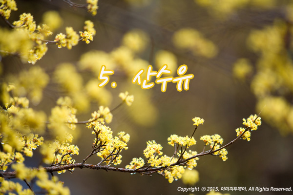

산수유 특징에 관심이 집중되고 있다.
산수유 특징을 살펴보면 꽃은 쌍떡잎식물로 산형화목 층층나무과의 산수유나무에서 핀다. 의성 지역을 상징하는 군화로 알려졌다. 노란 산수유꽃은 ‘영원불멸의 사랑’이란 꽃말을 가지고 있어 지역에 대한 애틋한 사랑과 의성 군민의 온화한 성품을 담고있다.
산수유 나무의 특징은 높이 4~7m 정도까지 자라며 나무껍질은 연한 갈색을 띄며 불규칙하게 벗겨지기도 한다. 잎은 마주나며 달걀 모양으로 가장자리가 밋밋하다. 잎의 길이는 4~12㎝, 너비는 2.5~6㎝이다. 뒷면에 갈색털이 있으며, 잎자루는 5~15㎜이다.
산수유 꽃의 특징은 양성화며 3~4월에 노란색의 꽃이 잎보다 먼저 핀다. 20~30개의 꽃이 산형꽃차례에 달리며 꽃의 지름은 4~7㎜, 길이 6~8㎜이다. 꽃잎은 4개이고 긴 타원형으로 바소꼴이다. 수술이 4개있으며 암술은 1개이다. 꽃에서 달콤한 향기가 진하게 난다.
산수유 열매의 특징은 타원형의 핵과(核果)로서, 붉은 색의 열매가 8~10월에 익는다. 열매 안의 종자는 긴 타원형이며 능선이 발달해 있는 것을 관찰할 수 있다.
산수유는 섭취했을 경우 간과 신장을 보호해주고 회춘 효과가 뛰어난 것으로 알려졌다. 특히 산수유 특징에는 저열량, 저지방 약재로 배뇨장애 개선 효과가 있을 뿐더러 다이어트에 좋아 여성들이 선호한다.
산수유 나무는 우리나라의 중부 이남에서 자라며, 의성 지역의 산지나 인가 부근에서 자라고 있다.
한편, 산수유꽃과 생강나무꽃을 혼돈하는 경우가 많다. 산수유꽃은 각각 꽃대가 있어 하나씩 작은 꽃을 피우지만 생강나무꽃은 뭉쳐서 피는 것이 특징이다.
무엇보다 생강나무와 산수유나무는 생긴 모습이 다르다. 생강나무는 매끈하고, 산수유 나무는 껍질이 일어나 언뜻보면 지저분해 보인다.